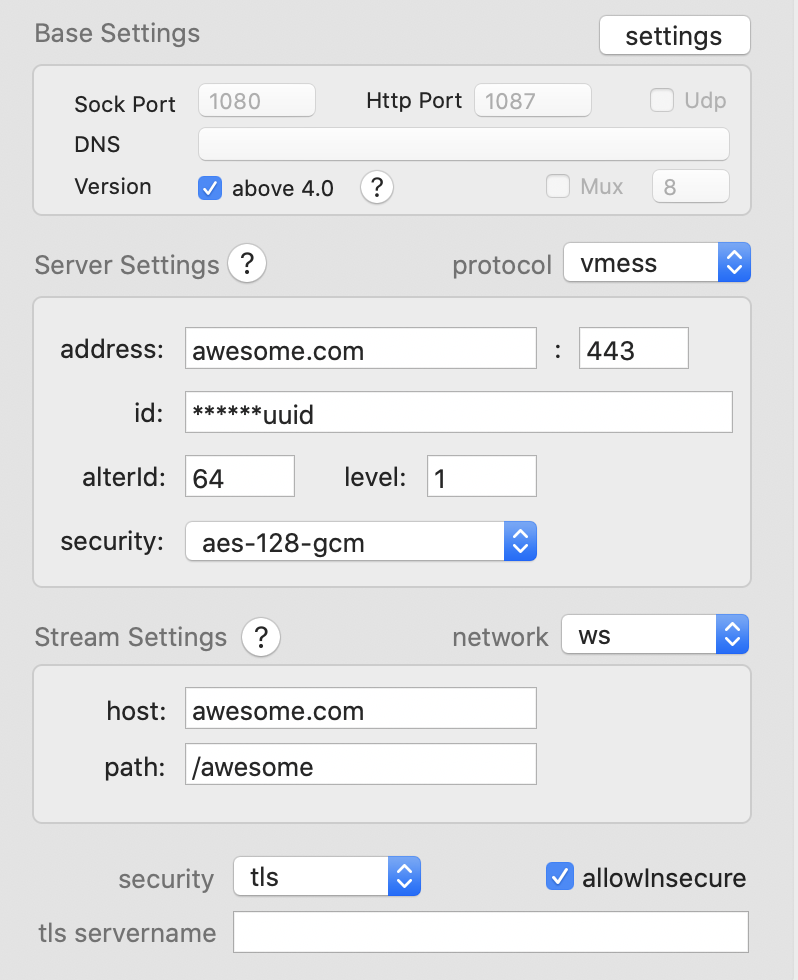

** 这篇文章是2020年的，可能文中描述的方法已经失效，仅供参考 **
VPS 购买
在现有的 VPS 提供商里，vultr 是比较便宜的，支持支付宝，其官网在国内也能正常访问，于是选择了它。
vultr 服务器的购买也是比较方便的，注册账号 -> 充值 -> 购买服务器 -> 等待服务器系统安装完成。
接下来便是软件的安装及配置，服务器操作系统是 centOS 7。
域名购买及安装 SSL 证书
域名是用来做流量伪装的，即所有科学上网的流量都是访问该域名。
我的域名是在阿里云域名上买的。
加入第三方源 epel
yum install -y epel-release
安装 certbot 用于签发 SSL 证书
yum install -y certbot
接下来申请 SSL 证书，此时 80 和 443 端口不能被占用，网上的教程如下，并没有多余的说明
certbot certonly --standalone -d example.com
但按照这个命令总是申请失败，而且 Let’s Encrypt 有请求次数限制，搜索一番后，完整的方法如下
-
将域名解析到 VPS 主机
添加 2 条 A 类解析记录，
www.example.com和example.com，在阿里云上，后者为@.example.com，记录值为 VPS 主机 IP -
手动申请 SSL 证书
certbot certonly --manual --preferred-chanllenges dns -d example.top -d www.example.com会提示如下
- - - - - - - - - - - - - - - - - - - - - - - - - - - - - - - - - - - - - - - - NOTE: The IP of this machine will be publicly logged as having requested this certificate. If you're running certbot in manual mode on a machine that is not your server, please ensure you're okay with that. Are you OK with your IP being logged? - - - - - - - - - - - - - - - - - - - - - - - - - - - - - - - - - - - - - - - - (Y)es/(N)o: y输入
y回车即可，接下来会要求添加域名的解析记录- - - - - - - - - - - - - - - - - - - - - - - - - - - - - - - - - - - - - - - - Please deploy a DNS TXT record under the name _acme-challenge.example.com with the following value: w********0_32_1u***cs9-lHG**********KwQ Before continuing, verify the record is deployed. - - - - - - - - - - - - - - - - - - - - - - - - - - - - - - - - - - - - - - - - Press Enter to Continue添加一条类型为 TXT 的解析记录，主机记录为
_acme-challenge.example.com，记录值为上方的字符串，添加成功后按回车键继续。如果在申请证书是指定了多个域名，则需添加多条记录申请成功后，会在
/etc/letsencrypt/live/example.com/下生成两个文件fullchain.pem和privkey.pem
安装及配置 Nginx
安装 nginx
yum install -y nginx
nginx 的配置文件在 /etc/nginx/nginx.conf，该文件引入了 /etc/nginx/conf.d/ 下的 *.conf 文件，所以我们把自定义的配置文件放在 /etc/nginx/conf.d/ 下，新建 v2ray.conf 文件
# http
server {
listen 80;
server_name example.com; # 域名
rewrite ^(.*) https://$server_name$1 permanent; # 重定向到https
}
# https
server {
listen 443 ssl http2;
server_name example.com; # 域名
ssl_protocols TLSv1 TLSv1.1 TLSv1.2 TLSv1.3;
ssl_certificate /etc/letsencrypt/live/example.com/fullchain.pem; # 证书地址
ssl_certificate_key /etc/letsencrypt/live/example.com/privkey.pem; # 证书密钥地址
ssl_ciphers ECDHE-RSA-AES128-GCM-SHA256:HIGH:!aNULL:!MD5:!RC4:!DHE;
ssl_prefer_server_ciphers on;
ssl_session_cache shared:SSL:10m;
ssl_session_timeout 10m;
root /usr/share/nginx/html;
# 正常网页访问
location / {
index index.html;
}
# 科学上网
location /awesome {
proxy_redirect off;
proxy_pass http://127.0.0.1:12345; # 假设v2ray的监听地址是12345
proxy_http_version 1.1;
proxy_set_header Upgrade $http_upgrade;
proxy_set_header Connection "upgrade";
proxy_set_header Host $host;
}
}
安装及配置 v2ray
安装 wget 及 zip
yum install -y wget zip unzip
下载 v2ray 安装脚本
wget https://install.direct/go.sh
安装 v2ray
bash go.sh
修改 v2ray 的配置文件 /etc/v2ray/config.json
{
"inbounds": [{
"port": 12345,
"protocol": "vmess",
"settings": {
"clients": [
{
"id": "****uuid",
"level": 1,
"alterId": 64
}
]
},
"streamSettings": {
"network": "ws",
"wsSettings": {
"path": "/awesome"
}
},
"listen": "127.0.0.1"
}],
"outbounds": [{
"protocol": "freedom",
"settings": {}
}, {
"protocol": "blackhole",
"settings": {},
"tag": "blocked"
}],
"routing": {
"rules": [
{
"type": "field",
"ip": ["geoip:private"],
"outboundTag": "blocked"
}
]
}
}
其中 port 和 wsSettings 中的 path 要与 Nginx 配置里的 一致，clients 中的 id 即为 v2ray 客户端的 id
防火墙开放 443 端口
防火墙默认是关闭 80 和 443 端口访问的，所以需要开放 443 端口，才能从外网访问
firewall-cmd --zone=public --add-port=443/tcp --permanent
重载防火墙设置
firewall-cmd --reload
开启服务
开启 Nginx
systemctl start nginx
开启 v2ray
systemctl start v2ray
这样服务就开启了，浏览器访问 https://example.com 返回正常网页，访问 https://example.com/awesome 返回 400 Bad Request
客户端配置
我的 Mac 客户端用的是 v2rayU，配置如下

这样梯子就搭建好了